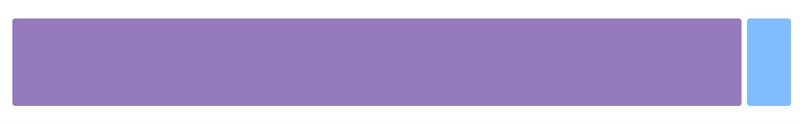

Sistema de rejilla¶
El sistema de rejilla de Bootstrap se basa en la creación o disposición del contenido de nuestra web dentro de rejillas flexibles, las cuales se escalarán al tamaño y posición adecuada de forma automática dependiendo del tamaño de la pantalla en la que se rendericen.
Elemento contenedor¶
El sistema de rejilla tiene que ser utilizado dentro de uno de los dos elementos contenedores que provee Bootstrap: container ó container-fluid. Es importante tener en cuenta que estos elementos se utilizan como raíz de la rejilla y no se podrán anidar unos dentro de otros.
Si lo que queremos es que el contenido de nuestra web aparezca centrado y con un ancho fijo entonces podemos utilizar la etiqueta .container, de la forma:
1 2 3 | |
Por el contrario, si queremos que el contenido de nuestra web pueda ocupar todo el ancho disponible (hay que tener en mente todos los tamaños de pantalla, incluso las muy grandes), podemos usar la etiqueta .container-fluid:
1 2 3 | |
En las siguientes imágenes se ejemplifica el resultado obtenido para un mismo ancho al aplicar los dos tipos de contenedores, container en el primer caso y container-fluid en el segundo. El comportamiento de estos elementos ante distintos tamaños de pantalla es el siguiente: el elemento "container-fluid" siempre se adapta al 100% del tamaño de la pantalla, mientras que el tipo "container" tiene un tamaño máximo, por lo que si el ancho de la pantalla es superior a este ancho el contenido aparecerá centrano, dejando un margen a cada lado, y si el ancho de la pantalla es igual o inferior al tamaño máximo del contenedor, entonces se adaptará al ancho disponible.

Funcionamiento del sistema de rejilla¶
El sistema de rejilla está pensado para ayudarnos en la disposición de los contenidos de nuestra web y su adaptación a los diferentes tamaños de pantalla de forma automática. Para ello tenemos que poner el contenido dentro de celdas o columnas que irán dentro de filas. Cada fila se puede dividir hasta en 12 columnas, pero seremos nosotros los que definiremos el número de columnas deseado para cada tamaño de pantalla.
A continuación se detalla el funcionamiento de este sistema:
-
Las columnas irán agrupadas dentro de filas (
.row). -
Las filas (
.row) se deben colocar dentro de una etiqueta contenedora:.container(para ancho fijo) o.container-fluid(para poder ocupar todo el ancho), esto permitirá alinear las celdas y asignarles el espaciado correcto. -
El contenido se debe disponer dentro de columnas o celdas, las cuales deben de ser el único hijo posible de las filas (
.row), las cuales, a su vez, serán el único hijo posible del contenedor (.containero.container-fluid). -
Al seguir este orden el sistema de rejilla funcionará correctamente, creando el espaciado interior y los márgenes apropiados dependiendo de las dimensiones de la pantalla.
-
Cada fila se puede dividir hasta un máximo de 12 columnas, pero somos nosotros los que tendremos que definir el número de columnas en el que queremos dividir cada fila y su ancho para cada tamaño de pantalla. Por ejemplo: 3 columnas de igual ancho.
-
Si el tamaño total de las columnas de una fila excede de 12 el tamaño sobrante se colocará en la siguiente fila.
-
El tamaño de las columnas se especificará con clases css que Bootstrap define para cada tamaño de pantalla, por ejemplo
.col-md-XX, dondeXXes el tamaño de la columna, que podrá tomar valores entre 1 y 12.
En la siguiente tabla se muestra un resumen del sistema de rejilla de Bootstrap, su comportamiento según el tamaño del dispositivo y las clases CSS que nos permiten controlarlo:
| Tamaño de pantalla | Dimensiones | Prefijo de la clase | Ancho del contenedor |
|---|---|---|---|
| extra pequeño | < 576 px | .col- | Ninguno (automático) |
| pequeño | ≥ 576 px | .col-sm- | 540px |
| medio | ≥ 768 px | .col-md- | 720px |
| grande | ≥ 992 px | .col-lg- | 960px |
| extra grande | ≥ 1200 px | .col-xl- | 1140px |
| extra extra grande | ≥ 1400px | .col-xxl- | 1320px |
Es importante destacar que al definir estas clases no solo se aplican para ese tamaño de pantalla sino para los superiores también. Por ejemplo, al indicar el tamaño de las columnas con las clases para tablets (.col-sm-), también se aplicará para los tamaños de pantalla medianos y grandes (si no hubieran otras clases para estos tamaños que los sobreescribieran). Es decir, nos tenemos que fijar que en la tabla anterior el tamaño se indica con el símbolo de mayor o igual (≥) (o de menor para el caso de xs) a un tamaño dado, y por lo tanto se aplicará esa disposición a partir de ese tamaño, a no ser que se indique otra cosa.
Bootstrap está diseñado pensando en los dispositivos móviles primero (o como ellos indican: siguiendo la estrategia mobile first). Por lo tanto todos los tamaños y dimensiones están pensadas para los dispositivos móviles, y para tamaños más grandes lo que hacen es adaptar o escalar estos tamaños.
Si nos fijamos en la tabla anterior podremos ver que para el tamaño extra pequeño el prefijo de la clase que se define es ".col-" (a diferencia de los demás que añaden un sufijo para el tamaño de pantalla). Cuando indiquemos el tamaño de las columnas usando esta clase se aplicará para todos los tamaños, a no ser, como ya hemos dicho, que se indique otra clase para otro tamaño mayor que defina otra disposición.
A continuación veremos diferentes formas de indicar el número de columnas que conforman cada fila, usando el sistema automático, especificando el ancho o bien usando un sistema mixto.